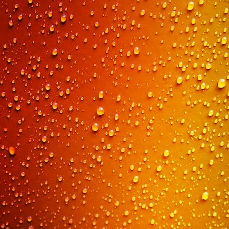
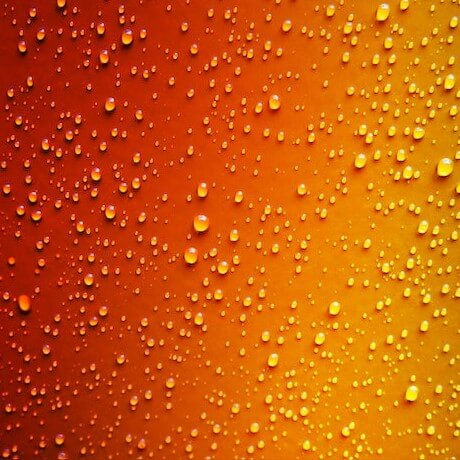
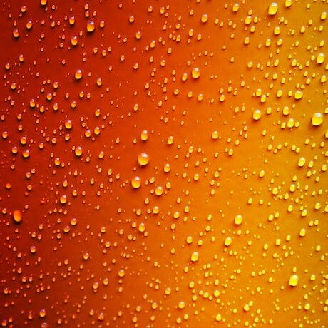
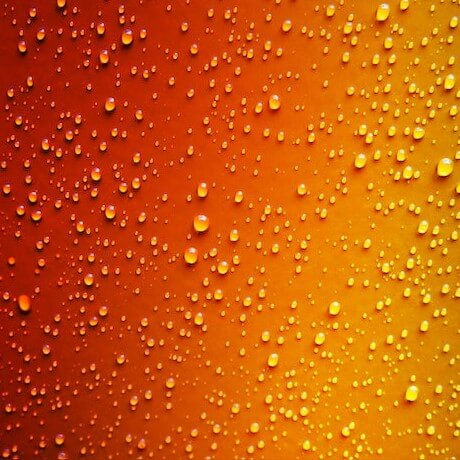

 

Historical Significance:
The color green has ancient roots in human culture. As early civilizations began to develop pigments and dyes, green became an important color, particularly due to its prevalence in the natural environment. The use of malachite by the ancient Egyptians for jewelry and the verdigris technique employed in Ancient Greece to achieve green hues are just two examples of its early significance. The creation of stable green dyes, however, was historically challenging, which made certain shades of green a luxury.
Cultural Meaning:
Across cultures, green is most prominently associated with nature and life. In many Eastern and Middle Eastern cultures, green represents fertility, prosperity, and renewal. In Islam, green is particularly significant, seen as a symbol of paradise in the Quran. The Celtic cultures saw green as a symbol of rebirth and transformation. In the European Middle Ages, however, green was sometimes associated with envy, one of the seven deadly sins, and thus had negative connotations. Today, particularly in the West, green is associated with environmentalism and ecological sustainability.
Symbolic Meaning:
Symbolically, green encompasses a range of meanings, most of which stem from its ties to nature. It represents growth, harmony, freshness, and fertility. Green is also linked with healing and is often used in hospitals and health-related contexts for its calming and balancing effects. Its relation to safety and permission is widely recognized in its use in traffic lights to signal 'go.' Moreover, the color has financial connotations, particularly in the U.S., where "greenback" is a slang term for paper money, linking the color to prosperity and wealth. In the chakra system of some Indian traditions, the heart chakra, which stands for love, warmth, and compassion, is represented by the color green.
Light and lime greens can be energising and sporty.
Subdued greens can be earthy and make people think of nature.
Dark greens imply wealth and finance.
Yellowish greens, are associated with sickness or jealousy.
Traffic lights: GO | Authorisation Granted Tick | Healthy indicator on food packaging
Brands | Starbucks | Spotify | Heineken | Xbox | Sprite | BP | GreenPeace
The complimentary / opposing colour = REDGreen with jealousy.
Describing someone as green. (new, inexperienced)
The grass is always greener on the other side. (other people’s lives always seem better than your own - but they’re probably not)
To be green fingered, or have a green thumb. (be good at growing plants)
Green-eyed monster. (To be a jealous person)
Give the green light. (to authorise, allow someone or something to progress forward)
"The future will either be green or not at all." - Bob Brown
"For in the true nature of things, if we rightly consider, every green tree is far more glorious than if it were made of gold and silver." - Martin Luther